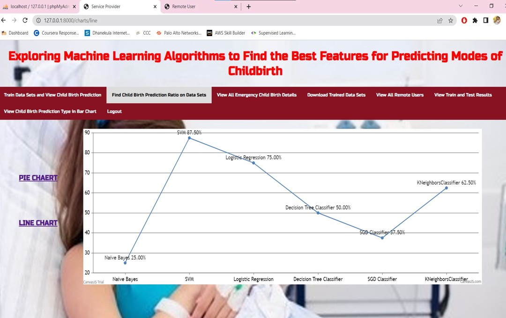

Login Page
User logs in to our website to predict the mode of childbirth.
User logs in to our website to predict the mode of childbirth.
We achieved an accuracy of 87.5% with metrics like precision, recall, and F1-score.
Users enter birth remarks and get the predicted mode of childbirth from our ML model.
Pie chart displays comparative accuracy across models.
Line chart visualizes accuracy trends for different algorithms.